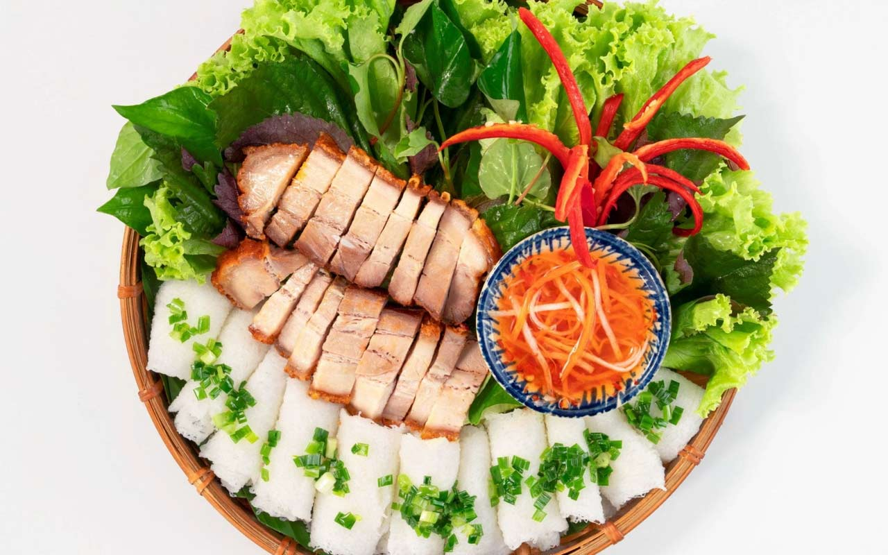

Thông tin về món ăn
Nguồn gốc
Bắt nguồn từ miền Trung, nhưng đã được huyện Phong Điền, Cần Thơ phát triển và trở thành món ăn đặc sản nổi tiếng. Bánh hỏi ban đầu có nguồn gốc từ vùng ven biển Nam Trung bộ và miền Trung. Thịt heo quay cũng có truyền thống lâu đời ở miền Trung, đặc biệt là Bình Định và Phú Yên.
Nguyên liệu chính
- Bánh hỏi: Làm từ bột gạo trắng, nước, và một chút muối.
- Thịt heo quay: Thịt mềm, da giòn, ướp gia vị vừa ăn.
- Gia vị: Nước mắm, tỏi, hành phi, ớt, đường.
- Rau sống: Rau diếp, húng quế, rau thơm.
Đặc điểm
- Hương vị: Bánh mềm, thịt giòn, hòa quyện nước chấm đậm đà.
- Cách thưởng thức: Cuốn bánh cùng rau sống, chấm nước mắm.
- Trải nghiệm: Vị mềm, giòn, mặn ngọt, thơm nồng, rất miền Tây.